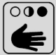
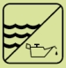

| (Firmenlogo) |
Hautschutz- und Hygieneplan
|
|||
| Handschuhe | Hautmittel für | |||
| Hautschutz | Hautreinigung | Hautpflege | ||
 |
||||
| Maschinenbedienung Hautkontakt zu wassergemischten KSS |
Verschmutzung leicht stark |
normale Haut | ||
| trockene Haut | ||||
| Maschinenbedienung Hautkontakt zu nicht wassermischbaren KSS |
Verschmutzung leicht stark |
normale Haut | ||
| trockene Haut | ||||
| Mehrmaschinenbedienung, wechselnder Hautkontakt zu wassergemischten und nicht wassermischbaren KSS  |
Verschmutzung leicht stark |
normale Haut | ||
| trockene Haut | ||||